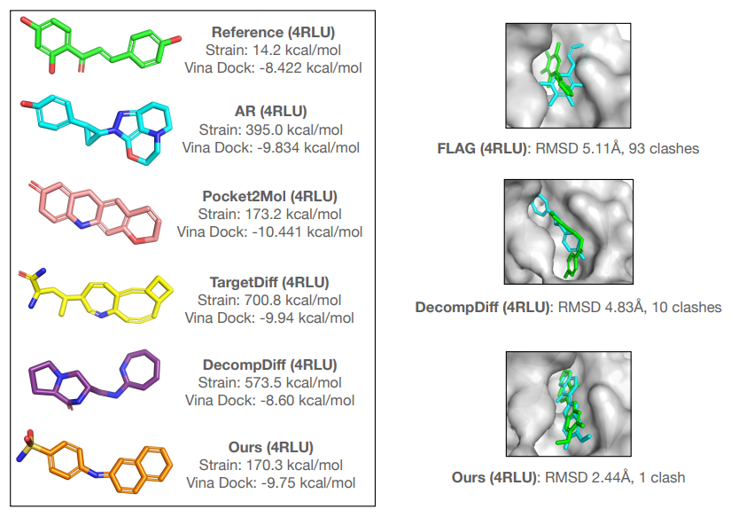

Yanru QuPh.D. in Computer Science, University of Illinois, Urbana-ChampaignEmail: kevinqu16 AT gmail.com, yanruqu2 AT illinois.edu [Publications] [Projects] [Awards] [Education] [Internships] [Miscellaneous] |
Hi! I am a third-year Ph.D. student, Department of Computer Science, University of Illinois, Urbana-Champaign. I'm honored advised by Prof. Jiaxuan You, Prof. Ge Liu, and Prof. Jiawei Han. I received my bachelor's and master's degree at Shanghai Jiao Tong University, APEX lab, supervised by Prof. Yong Yu and Prof. Weinan Zhang.
My research interests lie in the general area of machine learning, especially their applications in AI4Science, natural language processing, and recommender systems, with a wish to push the limit of scientific discovery, as well as build more accessible intelligent systems for academia, industry, and even society.
| Bayesian Flow Networks for Structure-Based Drug Design | |
|  |
2023 - 2024, GenSI Lab, Tsinghua AIR In this project, we explore generative modeling and sampling for structure-based drug design (SBDD). SBDD is to design novel ligand molecules which can bind to specific protein targets and exhibit desired biological activities. Existing SBDD methods failed to generate valid conformed 3D molecules, because they cannot handle different modalities of 3D molecules. Thus we propose MolCRAFT, to model and sample 3D molecules (continuous atom positions and discrete atom types) in the unified continuous parameter space. MolCRAFT achieved promising results on CrossDocked dataset, and surpassed SOTA SBDD models by a large margin. [demo] [paper][code] |
| Multi-hop Reasoning for Question Answering | |
|
2018 - 2019, APEX Lab, SJTU, and ByteDance AI Lab, Shanghai In this project, we study multi-hop reasoning for text-based question answering (QA). In recent years, QA has drawn much attention and achieved great success in simple scenarios. However, multi-hop reasoning over several distracted documents has only been preliminarily studied. In this project, we propose Dynamically Fused Graph Network (DFGN) to address this problem. The general idea of DFGN is extracting entity graphs from input documents, reasoning over the graphs and propogating node information to texts. Specifically, we stack several dynamic fusion layers to mimic human's step-by-step reasoning behavior. Our model achieves outstanding performance and yields interpretable reasoning chains. This paper is accepted by ACL'19 with oral representation. [demo] [paper][code] |
|
| Knowledge-enhanced Neighborhood Interaction for Recommendation | |
|
2018 - 2019, MILA, Montreal, and APEX Lab, SJTU This work studies an “early summarization” issue of existing graph-based recommendation models, which only simply utilize user & itemrepresentations, while the more valuable local interactions among user-/item-neighbors are neglected. This work incorporates Knowledge graph to address sparsity and cold start, and proposes Neighborhood Interaction model to make full use of the local structures. The proposed framework achieves superior performance improvements in click-through rate prediction (1.1%-8.4% absolute AUC improve-ments) and outperforms by a wide margin in top-N recommendation, compared with the most advanced feature based, meta-path based, andgraph network based SOTAs. And this paper wins the best paper awardof DLP-KDD’19. [paper][code] |
|
| Deep Recommender System for App Market | |
| 2017 - 2018, APEX Lab, SJTU, and Noah's Ark Lab, Shenzhen This is a joint research program of APEX Lab (SJTU) and Noah's Ark Lab with over CNY 1 million fundings. In this program, I serve as the program leader. We propose a novel deep learning framework for recommendation, called Product-based Neural Networks (PNNs), to tackle the gradient issues of matrix factorization (MF)-based and DNN-based methods. We propose several product operators for PNN, as shown in the figure. The kernel product version (KPNN) defeats libFFM (the winning solution) in Criteo Display Advertising Challenge. The net-in-net version (PIN) is later deployed in App Market, achieving over 35% CTR improvement in online A/B test. Corresponding works are accepted by ACM Transactions on Information System, and are regarded as a high-value patent. Corresponding open source projects of this work get 300+ stars on Github. [paper][data][code][code] |
|
| Transfer Learning for Named Entity Recognition | |
| 2017, APEX Lab, SJTU In this project, we study cross-specialty transfer learning for Named Entity Recognition (NER). Most of the previous works on NER transfer mainly focus on introducing domain-invariant constraints to LSTM. However, in real world, the conditional probability of entities may not be identical among different specialties, making these models not applicable to such cases. To solve this problem, we introduce a label-aware prior to LSTM, and an L2 constraint on CRF parameters. We prove the L2 distance in parameter space is equivalent to the KL-divergence in CRF output distributions. The work is accepted by NAACL with oral (6.73%) representation. [paper][code] |
|
| Representation Learning for Domain Adaptation | |
| 2017, APEX Lab, SJTU Most of the works in domain adaptation focus on learning domain-invariant representations, i.e., learning projection functions which map source/target domain input data to the same hidden space. One popular solution to domain adaptation is by adding a maximum mean discrepancy (MMD) constraint to the learned representations. Another solution is by learning a domain critic. In this work, we follow the idea of domain critic, and propose an adversarial representation learning approach, which uses Wasserstein distance to measure the domain discrepancy and plays a minimax game between the feature extractor and the domain critic. Besides, we provide a generalization bound guarantee and a gradient analysis. [paper][code] |
|
| UHands: A Campus Online Shopping Platform | |
| 2014 - 2015, Sixiangjiyuan Co. Ltd, Shenzhen Sixiangjiyuan Co. Ltd is a university venture company started from Sep. 2014. In this company, I serve as the Chief Technology Officier. We develop a campus online shopping and secondhand transaction platform, UHands, which gets CNY 1 million angel investment. The platform was running at Unversity of International Business and Economics, and North West Agriculture and Forestry University. |
|
"उत्तिष्ठ जाग्रत प्राप्य वरान्निबोधत| क्षुरस्य धारा निशिता दुरत्यया दुर्गं पथस्तत्कवयो वदन्ति||"
"Rise, wake up, seek the wise and realize. The path is difficult to cross like the sharpened edge of the razor (knife), so say the wise."
"一把刀的锋刃很不容易越过；因此智者说得救之道是困难的。"